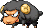

Lv. 37 · #9600008
검은 양
서주평야 부근에 출몰하는 검은 양들은 천성적으로 승부욕이 강해 다가가기 어렵다. 건드리면 날카로운 눈매로 공격한다. 그러나 검은 양털이 특별한 가치가 있는지는 의문이다.
스탯
레벨 37- HP
- 1,500
- MP
- 100
- EXP
- 79
- 넉백 가능 데미지
- 1+
- 물리 데미지
- 115
- 마법 데미지
- 125
- 물리 방어력
- 100
- 마법 방어력
- 115
- 속도
- 0
- 37레벨 에서의 필요 명중
- 65.988
- 메소
- 277.5
- 속성관계
- 미기재
- 체경비
- 18.99
- 형태
- 동물형
출현 지역
출현 맵 1개맵 이름을 누르면 메이플노트의 맵 정보가 열립니다.
드롭 테이블
전체 19개| 아이템 | 아이템 ID | 드롭 확률 |
|---|---|---|
| 검은 털 | 4000194 | 40% |
| 뻣뻣한 깃털 | 4003004 | 4% |
| 동물의 가죽 | 4000021 | 3% |
| 하얀 포션 | 2000002 | 1% |
| 파란 포션 | 2000003 | 1% |
| 활전용 화살 | 2060000 | 0.8% |
| 석궁전용 화살 | 2061000 | 0.8% |
| 은의 원석 | 4010004 | 0.3% |
| 가넷의 원석 | 4020000 | 0.3% |
| 목비 표창 | 2070002 | 0.01% |
| 당커 | 1312006 | 0.01% |
| 다크 가이즈 | 1002175 | 0.01% |
| 흑진월갑주 치마 | 1061085 | 0.007% |
| 레드 아르텐 | 1082062 | 0.007% |
| 브라운 피에르슈즈 | 1072120 | 0.007% |
| 흑진월갑주 | 1041086 | 0.007% |
| 아다만티움 보닌 | 1472016 | 0.006% |
| 신발 이동속도 주문서 10% | 2040708 | 0.004% |
| 단검 공격력 주문서 60% | 2043301 | 0.004% |
조건에 맞는 드롭 아이템이 없습니다.
확률은 메이플노트에 게시된 값입니다. 아이템 이름을 누르면 원본 아이템 정보가 열립니다. 과거 버전 데이터이므로 실제 메이플랜드와 다를 수 있습니다.